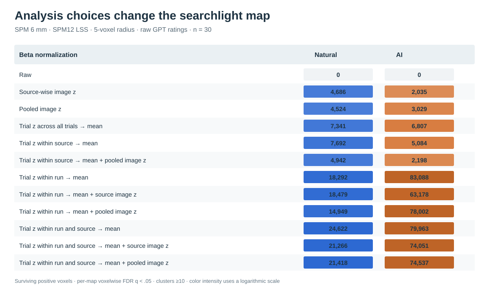

How much does an fMRI analysis choice change the map?
A controlled grid varies the processing of the same 30-participant affective-image cohort, then measures how many voxels survive group-level searchlight RSA. Each result is labeled by its exact settings, so an apparent neural finding can be traced back to the choices that produced it.
57completed configurations in this comparable slice
114Natural and AI group maps
60 × 60image RDM per source · 1,770 unique pairs
30participants
Current results below; the expanded grid is planned and has not been run.
01 / The question
Which settings drive the observed result?
Natural and AI-generated images are analyzed separately. For each source, a 60-image fMRI dissimilarity matrix is compared with a matrix of Euclidean distances between ChatGPT valence and arousal ratings. The searchlight moves one voxel at a time. Subject maps enter a group test; voxelwise FDR is applied separately to each resulting map, followed by a minimum cluster extent of 10 voxels.
Voxel count is a sensitivity measure, not an accuracy score or a measure of scientific truth. The figure and table expose how counts shift when the beta estimator, normalization or spatial sampling changes. The current comparisons are exploratory; a large count in one setting does not validate that setting.
02 / Summary figure
The current grid

A focused slice of the completed grid: SPM 6 mm, SPM12 LSS, five-voxel radius and raw GPT ratings. Color intensity is logarithmic; numbers are exact surviving voxel counts.
The bars show surviving voxels for each completed Natural and AI map. Select an estimator group or normalization to inspect the corresponding settings. The bar scale is logarithmic so small and large clusters remain visible; exact counts appear in the table.
Completed configurations
NaturalAI
Group-level positive searchlight RSA voxels after per-map voxelwise FDR q<.05 and clusters ≥10 voxels. A zero means no voxels survived. Counts across different voxel grids or sphere geometries should not be read as directly equivalent effect sizes.
03 / Completed tests
Inspect the exact settings
These 57 unique configurations meet the displayed cohort, RDM and threshold criteria. The table includes the current SPM 6 mm matched-LSS normalization sweep, a GLMsingle Type-D comparison, and the existing fMRIPrep 4 mm LSS comparison. They are observed results, not the full factorial plan.
Preprocessing
Beta estimator
Sphere
Beta normalization
Rating normalization
Natural voxels
AI voxels
Data: aggregate group voxel counts from the analysis inventory, curated for 60 images/source, 1,770 pairs, n=30, GPT valence–arousal RDM, per-map FDR q<.05, and cluster extent ≥10. No participant-level data are published here. Download the displayed aggregate data ↓
04 / Planned expansion
The full parameter grid
These axes describe the next HiPerGator runs. Blank cells in this design have no result yet. Spatial resolution and smoothing will be recorded independently; radius in voxels will also be reported in millimeters for each output grid.
01 · Preprocessing
Resolution and pipeline
Traditional SPM and fMRIPrep workflows; acquisition and output-grid resolution, normalization to MNI, motion and nuisance handling, and other pipeline choices kept explicit. The completed slice includes an MNI 2 mm SPM grid and an approximately 1.80 × 1.80 × 2.25 mm fMRIPrep grid.
02 · Smoothing
Before and after GLM
0–8 mm FWHM before the GLM and 0–8 mm after the GLM, including no smoothing. The precise step size and valid combinations will be fixed before submission; post-GLM smoothing will be tracked separately from preprocessing smoothing.
03 · Beta estimation
Single-trial models
SPM12 LSS, SPM12 LSA, and GLMsingle configurations. GLMsingle factors include HRF treatment, GLMdenoise on/off, fractional ridge on/off and their eligible combinations. Estimator settings will be reported in full for each output.
04 · Searchlight
Six sphere radii
Radii 1, 2, 3, 4, 5 and 6 voxels, with centers advanced one voxel at a time. Every map uses the same 60 images per source, yielding a 60 × 60 RDM and 1,770 unique image pairs.
05 · Normalization
Betas and ratings
Raw, source-wise and pooled image-level beta z scores, plus trial-level voxel z scores across all trials, within source, within run and within run × source, with the tested image-level follow-up options. Ratings are tested raw, source-wise z scored and pooled z scored.
06 · Group inference
One consistent reporting rule
Only the 30-participant cohort. Natural and AI maps are tested separately, with voxelwise FDR q<.05 per map and clusters of at least 10 voxels. Decoding is a later phase and is not counted as a completed RSA test.
Preprocessing fields recorded for every future run
Each result will carry its acquisition voxel size, input space, preprocessing software and version, slice-timing method, motion realignment and censoring rule, anatomical coregistration, tissue segmentation, MNI template and warp, resampling interpolation, output voxel size, nuisance regressors, temporal filtering, pre-GLM FWHM, post-GLM FWHM, brain mask, and the subject/run inclusion list. Values that are fixed across the grid will still be reported.
The existing public inventory records preprocessing summaries rather than every field above. Those details will be audited from the original job manifests before the expanded runs are added.
Why no total planned-test count yet?
The 0–8 mm smoothing increment, exact resolution grid, and valid GLMsingle factor combinations have not been fixed. Multiplying the axes now would imply a completed design that does not exist. The count will be added when those levels are locked and the remaining HiPerGator jobs are specified.